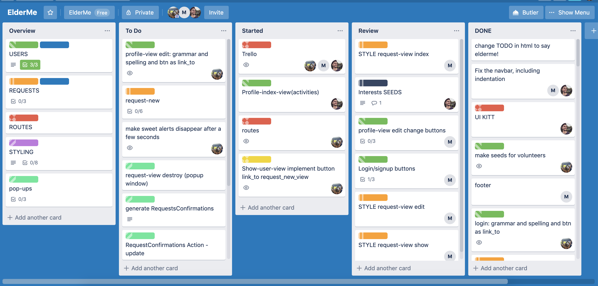

Case study ElderMe
Goal
The product should facilitate the interaction and shared activities of elder persons and volunteers.The elder person can choose what activity they are interested in and be shown a selection of volunteers that share that interest. Then they can check out the volunteers profile and send them a meeting request with date and time. The volunteer then can accept or decline the request. If accepted, the meeting will be inserted into the users’ calendar. They can be edited or deleted.
This project presented an opportunity to build a web application with ruby on rails from scratch, as well as work in a collaboration and collegial environment. As the DRI (designated responsible individual) of the team it tought me to take charge, be responsible and take ownership of things that didn't go as planned.
Approach
The guidelines of this project were specifying that all team members will work on both the front and back end. That brought its own difficulties with it. One were of a personal matter, a certain disinterest or disliking or insecurity in one area.
It did not make too much sense to divide all the different methods in the controllers and corresponding models and views to three different developers, but maybe was a good preparation for later projects and collaborations. Is it how it would be in the real world out there?
First steps:
- Setup the rails template, buy a domain name, set up server - Heroku
- We drew out the different page views with pen and paper.
- Then we created a new trello project and created the different tasks with specific label colors.

-
We had different columns:
Overview: Held all the main groups of tasks, for example the groupings of MVC, model, view and controller, Styling, pop-ups. These cards will not be moved but stay to be consulted and updated, checking off the individual tasks that are in the checklist, that correspond with additional cards
To Do, Started, Review, Done. Every individual card corresponds with a feature branch (ideally named the same or similar)
In all other columns the cards hold individual tasks that are summed up in the overview cards. They can be assigned individually and get moved from To Do to started to the review (meaning they are finished and pushed to gitHub and are in the process of being reviewed by all other team members). Once the changes are reviewed and approved by everyone, the feature branch holding the changes, will be merged into the master branch, everyone pulls the updated master branch and continue working. The card can be finally moved to the DONE column.
All individual cards must have the same color label as the overview cards. Use labels for colourblind to be more inclusive
Difficulties and Solutions
Difficulties | Solutions
------------ | -------------
finding team dynamic | Accept and respect team members as individuals. Include everyone in decision process and set up guidelines together.
Conflicts about different levels of interest, investment | Focus on yourself and your work, but also not losing right of team members, continuously involving team members in process and status updates. Ultimately accept that everyone has individual priorities. Nevertheless ask team members respectfully to contribute the parts they were assigned to and insist in them following the guidelines set up together before starting to code
Git, accidentally working on the master branch instead of creating a new feature branch | Making a Guidline with the different steps, for the first few days look continuously at list and follow step by step, regularity delete feature branches that are not needed anymore
Keeping an overview of the complex structure provided by the ruby on rails | FileIcons Plugin, closing folders as soon as they are not needed anymore, making sure the models and controllers and views follow naming conventions
Reading team members code | Make sure, all the naming conventions are followed and indentions are correct. User comments as much as needed so that someone new to team can easily catch up.
Lessons learned
-
Working in teams is hard. When working on a project by yourself, you are the one with all the strings in hand. You decide in which direction the product will move, what to add, what the MVP should include, how fast to move. In a team, you have to come to a consensus. You have to slow down situations to now jump the gun but follow the order of things.
-
Start the day with having a new look at where we are at and what needs to be achieved for that work day and divide up the different tasks to the team members, will help immensely.
-
Have a list of tasks easily accessible to all team members at all times. The team members for their part need inform on what their current task is and continuously update their progress. This way, everyone is always up to date, can check in with their colleagues to see if they need help with a task (or the team member can add another colleague to a task to let them know they need support), others can know which task is still open or if it makes sense to start a task if the task directly previous, that needs to be done before it can continue down that line. Others can see if it makes sense to pick up a task that depends on another task to be completed. It is also motivating and keeps up morale to see how we as a team are advancing, that the progress we make, does advance the product.
-
Communication. Probably the biggest part of working in a team, that needs to be the top priority above all else. If there is no (good and productive) communication, there won’t be a (good) product that users will use. And does a product that has no users even exist? The tree that falls when no one is around, doesn’t make a sound. Even working at one work station does not mean there will be automatic communication. Using tools like slack also help having a record that you can refer to when things get hectic. When communicating with each other, be kind to one another, respectful, try to see where the other person is coming from. Give constructive criticism, say why you prefer one solution over the other so that the other person can understand here YOU are coming from.
-
Sometimes it is a good idea to involve an uninvolved person in resolving conflicts. A mediator.
-
You need to be on the top of your game. When multiple people work in the same documents, even when they are on different tasks in different parts of the code, it can get confusing. Not jumping to the next task without consulting the task list and its assignees is fundamental.
-
Someone has to be in charge. Even in a team as small as three, someone has to take the lead and keep an eye on things so the overview is safe and up to date. The person in charge doesn’t have to be the same every day, but one has to be the go to person.
-
Every day you learn an increased amount. Give yourself breaks. There is no sense in pushing and pushing until exhaustion.
-
Different people will care different amounts about the product. In result they will invest different amounts of energy, time and emotion into it. You have to be ok with that and keep true to what you want to invest.
-
Focus on yourself and your tasks but don’t loose sight of what the rest of the team are up to.
Open issues
- Add an OAuth to sign in with gmail or facebook
- Add a feature that shows volunteers with same interest within certain radius.
- Add feature to upload a profile picture and a video
- Add a feature of subtitles on video.
- Make the webpage more accessible. Try a screenreader and know what it still needs.
Thanks
This was a team effort, I could not have done it without Ronan Recune - design/front end, and Monther Al Gbawi - front end. It has been a pleasure to work with you!